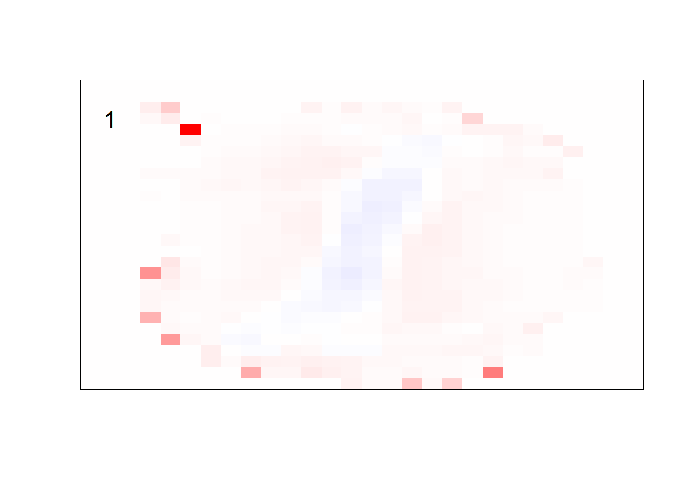
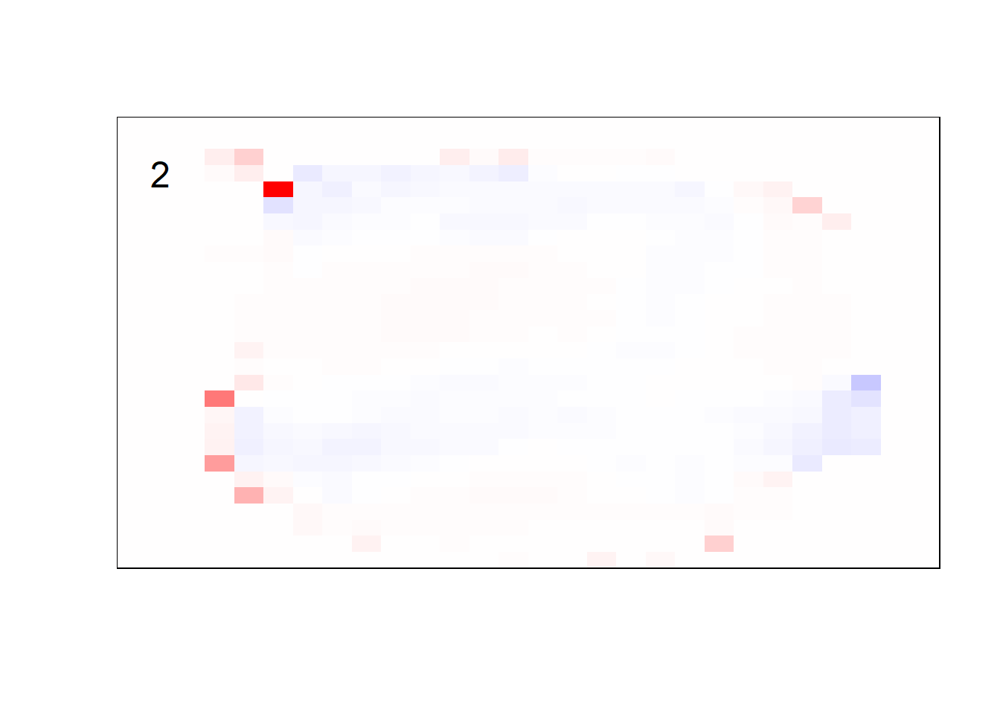
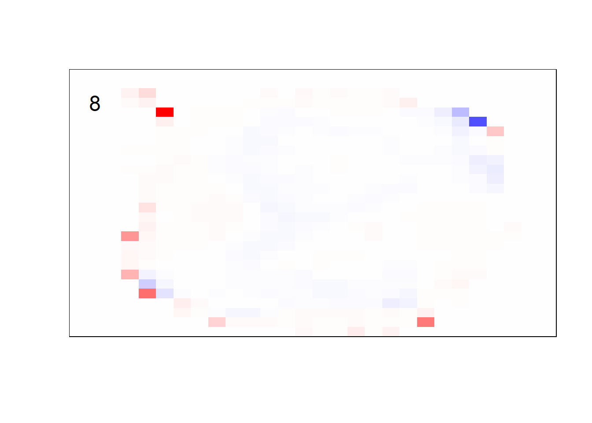

Chapter 3 Digit Model
In preparation for neural networks, we take a brief chapter to run other models on MNIST hand-written data. First we will run a binomial GLM on each digit and keep the maximum outputted likelihood as the predicted digit, then we will run a multinomial GLM to assess the likelihood of every digit simultaneously.
This chapter can be safely skipped / ignored.
3.1 Binomial Model
3.1.1 Setup
# Loads the MNIST dataset, saves as an .RData file if not in WD
if (!(file.exists("mnist_data.RData"))) {
# ## installs older python version
# reticulate::install_python("3.10:latest")
# keras::install_keras(python_version = "3.10")
# ## re-loads keras
# library(keras)
## get MNIST data
mnist <- dataset_mnist()
## save to WD as .RData
save(mnist, file = "mnist_data.RData")
} else {
## read-in MNIST data
load(file = "mnist_data.RData")
}
# Access the training and testing sets
x_train <- mnist$train$x
y_train <- mnist$train$y
x_test <- mnist$test$x
y_test <- mnist$test$y
rm(mnist)## plot function, from OG data
plot_mnist <- function(plt) {
## create image
image(x = 1:28,
y = 1:28,
## image is oriented incorrectly, this fixes it
z = t(apply(plt, 2, rev)),
## 255:0 puts black on white canvas,
## changing to 0:255 puts white on black canvas
col = gray((255:0)/255),
axes = FALSE)
## create plot border
rect(xleft = 0.5,
ybottom = 0.5,
xright = 28 + 0.5,
ytop = 28 + 0.5,
border = "black",
lwd = 1)
}## train data
# initialize matrix
x_train_2 <- matrix(nrow = nrow(x_train),
ncol = 28*28)
## likely a faster way to do this in the future
for (i in 1:nrow(x_train)) {
## get each layer's matrix image, stretch to 28^2 x 1
x_train_2[i, ] <- matrix(x_train[i, , ], 1, 28*28)
}
x_train_2 <- x_train_2 %>%
as.data.frame()
## test data
x_test_2 <- matrix(nrow = nrow(x_test),
ncol = 28*28)
for (i in 1:nrow(x_test)) {
x_test_2[i, ] <- matrix(x_test[i, , ], 1, 28*28)
}
x_test_2 <- x_test_2 %>%
as.data.frame()
## re-scale data
x_train_2 <- x_train_2 / 256
x_test_2 <- x_test_2 / 256
## response
# x_test_2$y <- y_test
# x_train_2$y <- y_train3.1.2 Model
## for speed
# n <- nrow(x_train_2)
n <- 100
indices <- sample(x = 1:nrow(x_train_2),
size = n)
## init data
x_glm <- x_train_2[indices, ]
y_glm <- y_train[indices]
train_pred <- list()
## drop cols with all 0s
x_glm <- x_glm[, (colSums(x_glm) > 0)]## 10 model method
for (i in 0:9) {
print(i)
y_glm_i = (y_glm == i)
init_model <- cv.glmnet(x = x_glm %>% as.matrix,
y = y_glm_i,
family = binomial,
alpha = 1)
train_pred[[i + 1]] <- predict(init_model,
x_glm %>% as.matrix,
s = init_model$lambda.min,
type = "response")
}## [1] 0
## [1] 1
## [1] 2
## [1] 3
## [1] 4
## [1] 5
## [1] 6
## [1] 7
## [1] 8
## [1] 9## format results
predictions <- data.frame(train_pred)
names(predictions) <- c("zero",
"one",
"two",
"three",
"four",
"five",
"six",
"seven",
"eight",
"nine")
#write.csv(predictions, "pred.csv", row.names = FALSE)
## convert to numeric
max_col <- apply(X = predictions,
MARGIN = 1,
FUN = function(x) names(x)[which.max(x)])
word_to_number <- c("zero" = 0,
"one" = 1,
"two" = 2,
"three" = 3,
"four" = 4,
"five" = 5,
"six" = 6,
"seven" = 7,
"eight" = 8,
"nine" = 9)
preds <- word_to_number[max_col] %>% as.numeric
## confusion matrix
table(y_glm, preds)## preds
## y_glm 0 1 2 3 4 5 6 7 8 9
## 0 10 0 0 0 0 0 0 0 0 0
## 1 0 12 0 0 0 0 0 0 0 0
## 2 0 0 7 0 0 0 0 0 0 0
## 3 0 0 0 9 0 0 0 0 0 0
## 4 0 0 0 0 10 0 0 0 0 0
## 5 0 0 0 0 0 16 0 0 0 0
## 6 0 0 0 0 0 0 12 0 0 0
## 7 0 0 0 0 0 0 0 11 0 0
## 8 2 0 1 0 0 3 0 0 3 0
## 9 0 0 0 0 2 0 0 0 0 2## misclassification rate
mean(!(y_glm == preds))## [1] 0.083.2 Multinomial Model
3.2.1 Setup
# Loads the MNIST dataset, saves as an .RData file if not in WD
if (!(file.exists("mnist_data.RData"))) {
# ## installs older python version
# reticulate::install_python("3.10:latest")
# keras::install_keras(python_version = "3.10")
# ## re-loads keras
# library(keras)
## get MNIST data
mnist <- dataset_mnist()
## save to WD as .RData
save(mnist, file = "mnist_data.RData")
} else {
## read-in MNIST data
load(file = "mnist_data.RData")
}
# Access the training and testing sets
x_train <- mnist$train$x
y_train <- mnist$train$y
x_test <- mnist$test$x
y_test <- mnist$test$y
rm(mnist)## plot function
plot_mnist_array <- function(plt, main_label = NA, color = FALSE, dim_n = 28) {
## setup color
if (color == TRUE) {
colfunc <- colorRampPalette(c("red", "white", "blue"))
min_abs <- -max(abs(range(plt)))
max_abs <- max(abs(range(plt)))
col <- colfunc(256)
} else {
col <- gray((255:0)/255)
min_abs <- 0
max_abs <- 255
}
## create image
image(x = 1:dim_n,
y = 1:dim_n,
## image is oriented incorrectly, this fixes it
z = t(apply(plt, 2, rev)),
col = col,
zlim = c(min_abs, max_abs),
axes = FALSE,
xlab = NA,
ylab = NA)
## create plot border
rect(xleft = 0.5,
ybottom = 0.5,
xright = 28 + 0.5,
ytop = 28 + 0.5,
border = "black",
lwd = 1)
## display prediction result
text(x = 2,
y = dim_n - 3,
labels = ifelse(is.na(main_label),
"",
main_label),
col = ifelse(color == TRUE,
"black",
"red"),
cex = 1.5)
}## train data
# initialize matrix
x_train_2 <- matrix(nrow = nrow(x_train),
ncol = 28*28)
## likely a faster way to do this in the future
for (i in 1:nrow(x_train)) {
## get each layer's matrix image, stretch to 28^2 x 1
x_train_2[i, ] <- matrix(x_train[i, , ], 1, 28*28)
}
x_train_2 <- x_train_2 %>%
as.data.frame()
## test data
x_test_2 <- matrix(nrow = nrow(x_test),
ncol = 28*28)
for (i in 1:nrow(x_test)) {
x_test_2[i, ] <- matrix(x_test[i, , ], 1, 28*28)
}
x_test_2 <- x_test_2 %>%
as.data.frame()
## re-scale data
x_train_2 <- x_train_2 / 256
x_test_2 <- x_test_2 / 256
## response
# x_test_2$y <- y_test
# x_train_2$y <- y_train3.2.2 Model
3.2.2.1 train
## set training data size
# n <- nrow(x_train_2)
n <- 100
indices <- sample(x = 1:nrow(x_train_2),
size = n)
## init data
x_multi <- x_train_2[indices, ]
y_multi <- y_train[indices]
## drop cols with all 0s
#x_multi <- x_multi[, (colSums(x_multi) > 0)]## for the sake of the coefficients viz, setting alpha = 0
init_model <- cv.glmnet(x = x_multi %>% as.matrix,
y = y_multi %>% factor,
family = "multinomial",
alpha = 0)## Warning in lognet(xd, is.sparse, ix, jx, y, weights, offset, alpha, nobs, : one
## multinomial or binomial class has fewer than 8 observations; dangerous ground
## Warning in lognet(xd, is.sparse, ix, jx, y, weights, offset, alpha, nobs, : one
## multinomial or binomial class has fewer than 8 observations; dangerous ground
## Warning in lognet(xd, is.sparse, ix, jx, y, weights, offset, alpha, nobs, : one
## multinomial or binomial class has fewer than 8 observations; dangerous ground
## Warning in lognet(xd, is.sparse, ix, jx, y, weights, offset, alpha, nobs, : one
## multinomial or binomial class has fewer than 8 observations; dangerous ground
## Warning in lognet(xd, is.sparse, ix, jx, y, weights, offset, alpha, nobs, : one
## multinomial or binomial class has fewer than 8 observations; dangerous ground
## Warning in lognet(xd, is.sparse, ix, jx, y, weights, offset, alpha, nobs, : one
## multinomial or binomial class has fewer than 8 observations; dangerous ground
## Warning in lognet(xd, is.sparse, ix, jx, y, weights, offset, alpha, nobs, : one
## multinomial or binomial class has fewer than 8 observations; dangerous ground
## Warning in lognet(xd, is.sparse, ix, jx, y, weights, offset, alpha, nobs, : one
## multinomial or binomial class has fewer than 8 observations; dangerous ground
## Warning in lognet(xd, is.sparse, ix, jx, y, weights, offset, alpha, nobs, : one
## multinomial or binomial class has fewer than 8 observations; dangerous ground
## Warning in lognet(xd, is.sparse, ix, jx, y, weights, offset, alpha, nobs, : one
## multinomial or binomial class has fewer than 8 observations; dangerous ground
## Warning in lognet(xd, is.sparse, ix, jx, y, weights, offset, alpha, nobs, : one
## multinomial or binomial class has fewer than 8 observations; dangerous groundmulti_model <- predict(init_model,
x_multi %>% as.matrix,
s = init_model$lambda.min,
type = "response")## format results
preds_init <- multi_model[, , 1] %>%
as.data.frame()
preds <- apply(X = preds_init,
MARGIN = 1,
FUN = function(x) names(which.max(x)) %>% as.numeric)
## TRAIN confusion matrix
table(y_multi, preds)## preds
## y_multi 0 1 2 3 4 5 6 7 8 9
## 0 11 0 0 0 0 0 0 0 1 0
## 1 0 14 0 0 0 0 0 0 0 0
## 2 0 1 4 0 0 0 0 0 0 0
## 3 0 0 0 12 0 0 0 0 0 0
## 4 0 0 0 0 11 0 0 0 0 0
## 5 0 0 0 0 0 4 0 0 0 0
## 6 0 0 0 0 0 0 11 0 0 0
## 7 0 2 0 0 0 0 0 6 0 0
## 8 0 1 0 0 0 0 0 0 13 0
## 9 0 0 0 0 1 0 0 0 0 8## TRAIN misclassification rate
mean(!(y_multi == preds))## [1] 0.063.2.2.2 test
## pre-process data
x_multi_test <- x_test_2 %>%
select(all_of(names(x_multi)))
## get preds
multi_model_test <- predict(init_model,
x_multi_test %>% as.matrix,
s = init_model$lambda.min,
type = "response")## format results
preds_init_test <- multi_model_test[, , 1] %>%
as.data.frame()
preds_test <- apply(X = preds_init_test,
MARGIN = 1,
FUN = function(x) names(which.max(x)) %>% as.numeric)
## TEST confusion matrix
table(y_test, preds_test)## preds_test
## y_test 0 1 2 3 4 5 6 7 8 9
## 0 859 1 2 10 7 16 26 1 55 3
## 1 0 1102 0 5 4 1 4 0 19 0
## 2 62 102 243 226 55 68 93 11 170 2
## 3 12 46 35 693 3 5 9 23 178 6
## 4 7 36 2 0 817 13 39 6 23 39
## 5 78 94 8 119 40 102 48 16 364 23
## 6 37 19 3 28 94 2 760 0 15 0
## 7 7 91 0 2 37 1 1 614 38 237
## 8 19 74 2 41 7 20 16 4 768 23
## 9 19 41 0 8 289 8 0 129 127 388## TEST misclassification rate
mean(!(y_test == preds_test))## [1] 0.3654## sort vectors so outputs are grouped
x_test_sort <- x_test[order(y_test), , ]
y_test_sort <- y_test[order(y_test)]
preds_test_sort <- preds_test[order(y_test)]
## get misclassified obs
wrong <- which(!(y_test_sort == preds_test_sort))
## plot a sample of misclassified obs
plot_wrong <- wrong[sample(x = 1:length(wrong), size = 3*8*6)] %>%
sort()
## plot params
par(mfcol = c(8, 6))
par(mar = c(0, 0, 0, 0))
for (i in plot_wrong) {
plot_mnist_array(plt = x_test_sort[i, , ],
main_label = preds_test_sort[i])
}par(mfcol = c(1, 1))3.2.3 model heatmaps
## get coefficients into matrices
model_coef <- coef(init_model, s = init_model$lambda.min) %>%
lapply(as.matrix) %>%
lapply(function(x) matrix(x[-1, ], nrow = 28, ncol = 28)) %>%
## take sigmoid activation just to help viz
lapply(function(x) 1 / (1 + exp(-x)) - 0.5)
mapply(FUN = plot_mnist_array,
plt = model_coef,
main_label = names(model_coef),
color = TRUE)## $`0`
## NULL
##
## $`1`
## NULL
##
## $`2`
## NULL
##
## $`3`
## NULL
##
## $`4`
## NULL
##
## $`5`
## NULL
##
## $`6`
## NULL
##
## $`7`
## NULL
##
## $`8`
## NULL
##
## $`9`
## NULL3.2.4 no outside cells model
earlier runs of the above sections revealed that for a regularization method that does not perform variable selection, odd importance is given to outermost cell for prediction. Thus, those will be removed:
## set training data size
# n <- nrow(x_train_2)
n <- 100
indices <- sample(x = 1:nrow(x_train_2),
size = n)
## init data
x_multi <- x_train_2[indices, ]
y_multi <- y_train[indices]
## drop outer cells
x_multi <- x_multi[, rep(seq(146, 622, 28), each = 18) + rep(0:17, times = 18)]## for the sake of the coefficients viz, setting alpha = 0
init_model <- cv.glmnet(x = x_multi %>% as.matrix,
y = y_multi %>% factor,
family = "multinomial",
alpha = 0)## Warning in lognet(xd, is.sparse, ix, jx, y, weights, offset, alpha, nobs, : one
## multinomial or binomial class has fewer than 8 observations; dangerous ground
## Warning in lognet(xd, is.sparse, ix, jx, y, weights, offset, alpha, nobs, : one
## multinomial or binomial class has fewer than 8 observations; dangerous ground
## Warning in lognet(xd, is.sparse, ix, jx, y, weights, offset, alpha, nobs, : one
## multinomial or binomial class has fewer than 8 observations; dangerous ground
## Warning in lognet(xd, is.sparse, ix, jx, y, weights, offset, alpha, nobs, : one
## multinomial or binomial class has fewer than 8 observations; dangerous ground
## Warning in lognet(xd, is.sparse, ix, jx, y, weights, offset, alpha, nobs, : one
## multinomial or binomial class has fewer than 8 observations; dangerous ground
## Warning in lognet(xd, is.sparse, ix, jx, y, weights, offset, alpha, nobs, : one
## multinomial or binomial class has fewer than 8 observations; dangerous ground
## Warning in lognet(xd, is.sparse, ix, jx, y, weights, offset, alpha, nobs, : one
## multinomial or binomial class has fewer than 8 observations; dangerous ground
## Warning in lognet(xd, is.sparse, ix, jx, y, weights, offset, alpha, nobs, : one
## multinomial or binomial class has fewer than 8 observations; dangerous ground
## Warning in lognet(xd, is.sparse, ix, jx, y, weights, offset, alpha, nobs, : one
## multinomial or binomial class has fewer than 8 observations; dangerous ground
## Warning in lognet(xd, is.sparse, ix, jx, y, weights, offset, alpha, nobs, : one
## multinomial or binomial class has fewer than 8 observations; dangerous ground
## Warning in lognet(xd, is.sparse, ix, jx, y, weights, offset, alpha, nobs, : one
## multinomial or binomial class has fewer than 8 observations; dangerous groundmulti_model <- predict(init_model,
x_multi %>% as.matrix,
s = init_model$lambda.min,
type = "response")## get coefficients into matrices
model_coef <- coef(init_model, s = init_model$lambda.min) %>%
lapply(as.matrix) %>%
lapply(function(x) matrix(x[-1, ], nrow = 18, ncol = 18)) %>%
## take sigmoid activation just to help viz
lapply(function(x) 1 / (1 + exp(-x)) - 0.5)
mapply(FUN = plot_mnist_array,
plt = model_coef,
main_label = names(model_coef),
color = TRUE,
dim_n = 18)
## $`0`
## NULL
##
## $`1`
## NULL
##
## $`2`
## NULL
##
## $`3`
## NULL
##
## $`4`
## NULL
##
## $`5`
## NULL
##
## $`6`
## NULL
##
## $`7`
## NULL
##
## $`8`
## NULL
##
## $`9`
## NULL